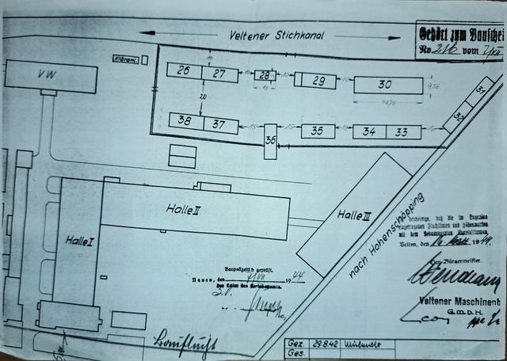
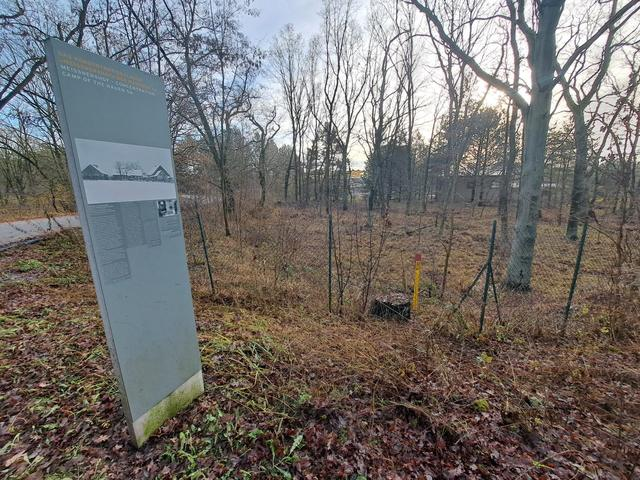
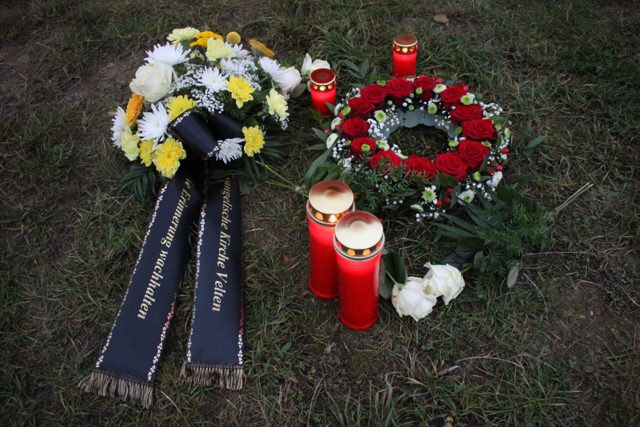
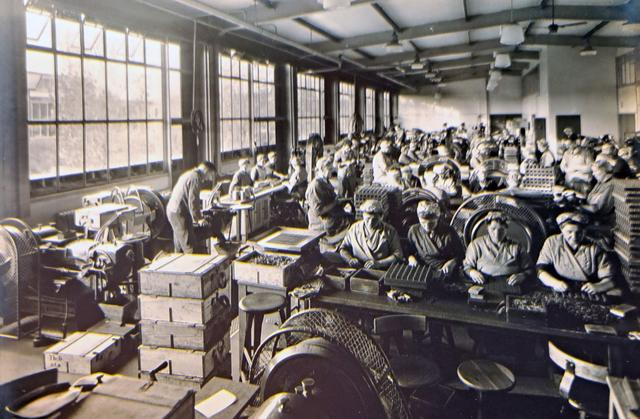
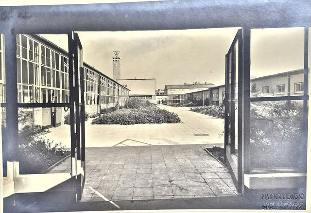
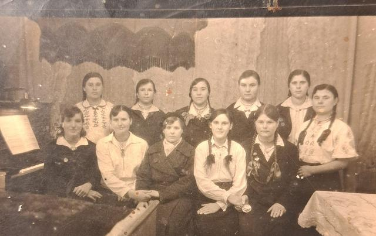
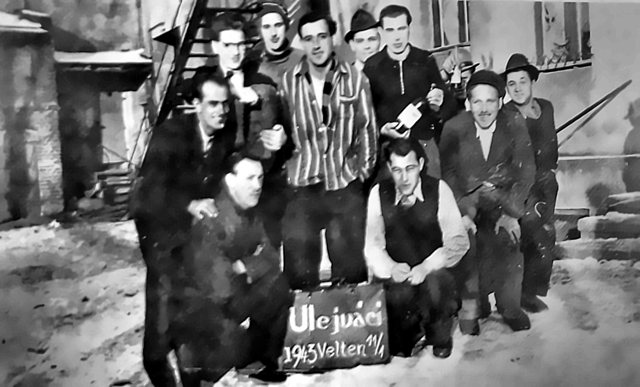

Arbeitsstand · 31 Einträge
Eine Kachel fehlt
Zwangsarbeit, Verfolgung und KZ-Haft in Velten 1933 bis 1945. Die Karte zeigt, wo etwas geschah und wo Spuren zu finden sind. Jeder Eintrag nennt seine Quelle, und was nicht bekannt ist, steht als «noch nicht verortet» oder «offen» da.
«Es ist geschehen, und folglich kann es wieder geschehen: darin liegt der Kern dessen, was wir zu sagen haben.»
Ihr Browser lädt Kartenbilder vom Server der OpenStreetMap Foundation. Dabei sieht der Server Ihre IP-Adresse. Mit «Straßenkarte abschalten» endet die Verbindung.
Kartendaten © OpenStreetMap-Mitwirkende, ODbL. Mit «Straßenkarte abschalten» zeigt die Karte nur Gitternetz und Orte.
Ort wählen
Wählen Sie einen Ort auf der Karte oder in der Liste.
Bilder
Fotos, Pläne und Luftbilder zu den Einträgen, jeweils mit Quelle, Bildbeschreibung und Hinweis zu den Rechten.

Lageplan Veltener Maschinenbau, 1942
Tafel zum Lager Meissnershof, 2023
Gebinde am Tonberg, 7.11.2024
Munitionsfertigung im Bergmann-Werk, um 1940
Innenhof des Bergmann-Werks, um 1940
Foto aus Briefen von 2004, um 1943
Tschechische Zwangsarbeiter, 11.1.1943Alle 31 Einträge als Liste
Velten: Außenlager und Betriebe
- V01 KZ Außenlager Velten
- V03 Ikaria Werke GmbH
- V04 Havelschmelzwerk
- V05 Veltener Maschinenbau GmbH (Velma)
- V06 Velmet, Veltener Leichtmetall-Gießerei
- V07 Theodor Bergmann & Co., Werk Velten
- V08 Felix Deichmann, Feuerwerks-Laboratorium
- V09 Gasthaus Bahnstraße 12, Munitionsfertigung
- V32 Holzfabrik am Hafenbecken (Luftbild 1945)
Velten: Unterkünfte und Lager
- V11 Gasthaus Bergschloss, Unterkunft
- V12 Kriegsgefangenenlager Mühlenstraße (Anhaltspunkt)
- V14 Barackenlager am Heidekrug (Theodor Bergmann & Co.)
- V15 Zwangsarbeiterinnenlager der Veltener-Maschinenbau-Ikaria-Werke am Stichkanal
- V16 Unterkünfte an der Breiten Straße
- V17 Wo die Verstorbenen untergebracht waren
- V31 Zwangsarbeiterinnenlager der Veltener-Maschinenbau-Ikaria-Werke (Luftbild 1945)
- V33 Gemeinschaftslager am Hafenplatz
- V34 Gaststätte und Lager «Hotel Fahrtmann»
- V35 Unterkunft Friedrichstraße 59 bis 63
- V36 Veltener Ofenfabrik AG (Veltag), Friedrichstraße
Velten: Gräber und Gedenken
- V18 Friedhof Velten
- V19 Gedenkstele am Weg «Zur Erinnerung»
- V37 VVN-Mahnmal an der Poststraße
- V38 Stolpersteine für die Familie Lehmann
- V39 Stolpersteine für Erna und Gustav Gersinski
- V40 Stolperstein für Richard Ungermann